| 為替指南ノ書: 勝てない人の為のバイブル (ビジネス、経済) | |
| 金井琢磨 | |
| (2018) | |
為替指南ノ書
本屋さんで「初心者FX入門」の本を買ったけど
・途中から分からなくなった
・急に難しくなった
・素人では分からないテクニカルな部分がついていけない
等の理由で初心者入門とかの類は、初心者の方が最後まで理解して読める方が少ないのではないでしょうか？
本の価値とは1000円の本なら1000円の価値です
1000円分の情報しか無いのです
それではせっかく為替の世界でやってやろう、という方も離れてしまいます
ひょっとしたら、その方の大きなチャンスを逃したかもしれません
ただし、FXは間違いなく「夢を叶えるツール」なのです
2段飛ばしではなく もっとゆっくり...
1段1段ゆっくりと確実に知識として積んでいく必要があります
だから私は進行が少し遅いかも知れません
でも...確実に知識となり、力になると思います
もっと階段を一つ一つ登っていく
そんなイメージでやっていきます
私はインジケーターの部類は一切使わないですし、あまりごちゃごちゃしているチャートは逆に読めないです
初心者の方にもわかりやすいと思いますが、目印になるような類のものはありませんので逆に難しいかもしれません
しかし、相場の本質の部分をしっかりと見れれば、どんなチャートだって読み解ける技術となります
株だろうが先物だろうが仮想通貨だろうが、結局テクニカルが通用するのです
しかし、全くの初心者の方には専門用語もありますので、そこは各自で最低限の知識で良いので覚えて下さいね
ここでは本に掲載されている様な内容のものはあまりありませんが、皆様は最低限の勉強をされていると思いますので、生きた知識を中心にお話していけたらと思います
最低限の勉強をして口座開設が終わり、もういつでもFXをできる状態になったあなたは、証拠金さえ入れてしまえば、いつでもFXを出来る状態になりました
しかし待ってください！
FXにはデモトレードがあります
いきなり実践形式も大事ですが、まずはチャートになれる事から始めましょう
きっとあなたはこう思うはずです
「本で見た形と違う」
「本ではここで反発してた」
「本の事が全く通用しない」
そうです！何故ならチャートは人間の欲望を表した生き物だからです
チャートは群集心理の結晶なのです
ただし、意識されてるポイントはあります
いきなり実践してそこを見つけられるまで、一体いくらのお金が消えてしまう事になるやら...
焦る必要なんて全くありません
何故なら、24時間毎日できるからです
チャンスも一瞬ではありません
毎日、しかも無限にあります
間違いなくFXは「夢を叶えるツール」です
いきなり実践して資金が無くなりました
また入金しました、溶かしました...
夢を叶えるどころか、負担になってしまうようじゃダメなんです
「いつか勝てる」では一生勝てないですから...
どこかで気づきが必要です
デモをやって確実に力にした方が、よっぽど近道なのです
何年かかってもいいじゃないですか！
相場はなくならないですし
その力さえ手に入れてしまえば、その先の人生は「一生お金に困る事がない」ですから
たとえ10年かかってもいいじゃないですか
大体きっちりとやれば、遅い方でも3年でプロになっています
相場から利益を取れるようになるのは、半年くらいが目安かと思います
私も3年でサラリーマンを辞めれました
人生の3年ですよ？
残りの人生の方が絶対に長いですから
今の仕事を3年やって月収100万超えますか？
私の言いたいところはそこなのです
もう一度言います
早く成功したい気持ちだけでは成功できないのです
焦る事はありません
まずトレンドはどっち方向なのか？を確認することです
トレンドというのは発生すれば結構長く続きます
初心者の方ほど短い足を見てしまいます
では、よく「長い足を見て短い足でエントリーする」と聞いたことあると思いますが、具体的に理解していない方が多いです
まずこのチャートを見てください
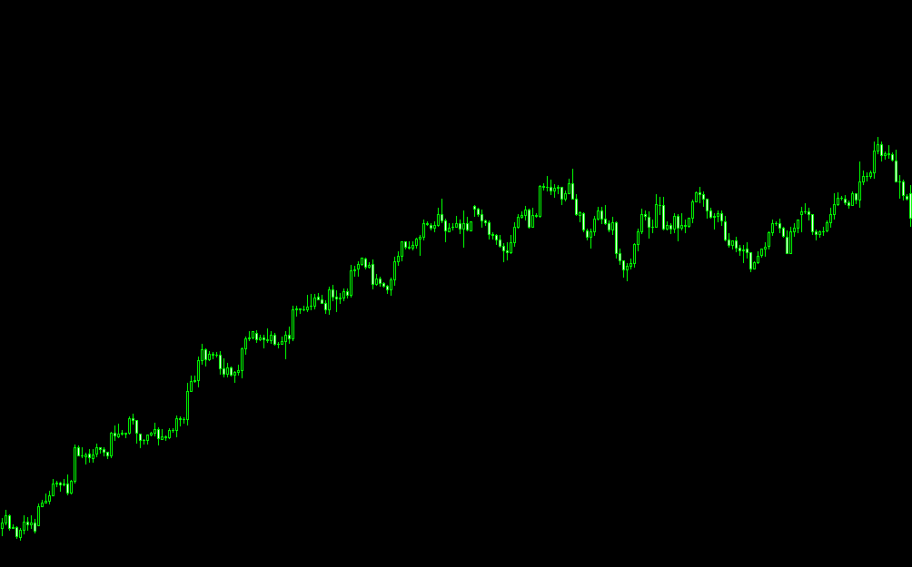
教科書のような上昇トレンドです
サポートレジスタンスも、きっちりとできています
これは日足チャートです
ではこのチャートを使って、ある部分を切り取っていきます
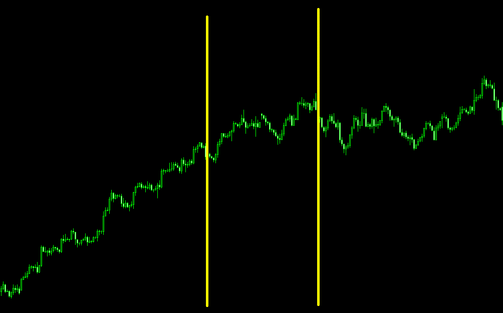
この部分を1時間足で見ると、こんな感じになります
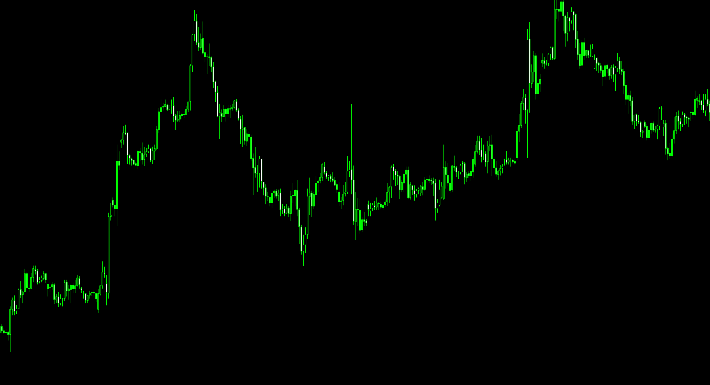
ここだけで見てしまうと、トレンドの途中であっても方向性の分からない感じがしませんか？
さらに15分や5分足ならもっとそうなります
だから短い足ほど迷ってしまうのです
「エントリーポイントはどこでもいい」と私は皆さんにはそう伝えてありますが、その中でもなるべくベストの場所でエントリーしないと利益は大きく伸ばせないのです
ではベストのエントリーポイントとはどこなのか？
そのあたりを詳しくお話していきたいと思います
私は順張りトレンドフォロー型のトレーダーです
簡単に言いますと、今の方向に流れに沿ってトレードしていくスタイルです
順張りは勝率が高いのです
何故なら、トレンドは長く続くからです
相場でのレンジ相場とトレンド相場の比率は7：3とも8：2ともいわれていますが、レンジ相場の方が圧倒的に多いのです
この３割のトレンドですが、発生した時の破壊力はすごいものがあります
順張りトレーダーにとって、トレンド相場は大事な稼ぎどころであり、資産をみるみる膨らませる事が出来ます
ではどうすれば勝てる
「相場の判断」ができるのか？
そう言った話を進めていきたいと思います
私が使うツールに、水平線とトレンドラインがあります
これはラインを引くことで、相場の流れや反転ポイント等エントリー＆ 決済の目安として非常に優秀なツールです
前項でお伝えしましたが、私はインジケータの類のものは一切使わないです
むしろフラットにした方がよく見えます
ローソク足の形で売り買いの圧力も見れます
どこで反転するか？どこで伸びるのか？等も、100％ ではないですが分かります
まずこのチャートを見てください
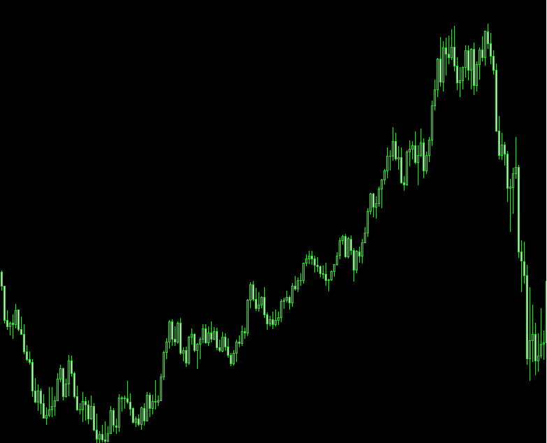
上昇トレンドなのはわかると思いますが、このチャートの高値と安値に水平ラインを引いてみましょう
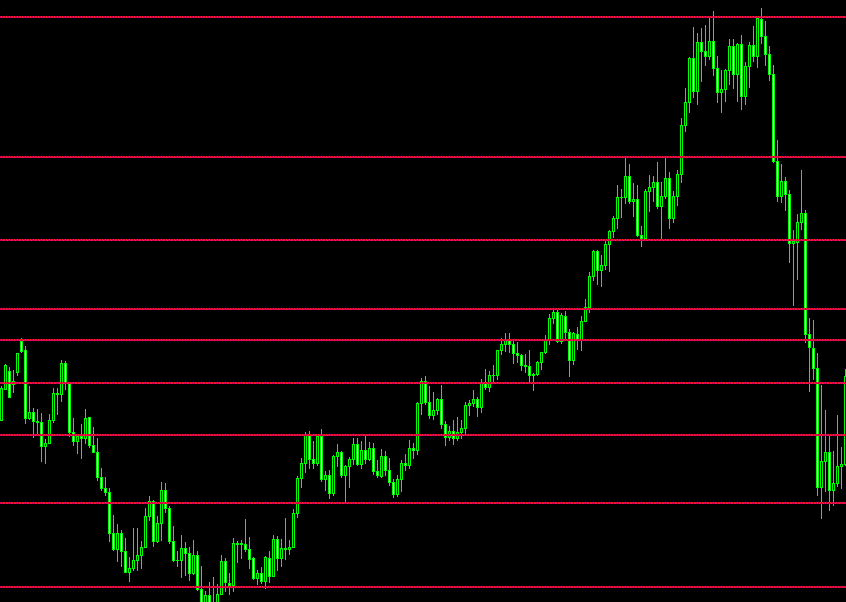
こうするだけでどこで反発するのか？というのがわかるようになります
ではさらにここにトレンドラインを引いてみましょう
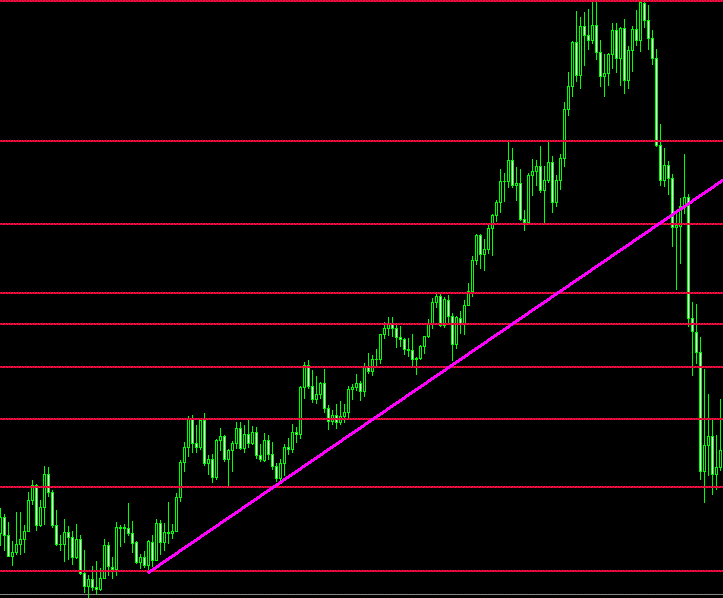
するとどうでしょう？
ブレイクするポイントまで分かりませんか？
よく後付けとか言われますが、最初の安値2点を結ぶだけで次に当たるポイントが丸わかりになります
これは決して後付けではなく、未来が分かるラインになるのです
そして最後の下に抜けるところまで、まるわかりです
相場とはこのくらいシンプルです
もちろんトレンドラインだけでは勝てない
勝てないですが、この水平線と組み合わせるだけでも勝てないトレーダーの半数以上はポイントが分かる
そういうポイントです
移動平均線（MA）なども昔は使っていましたが、今は一切使わなくなりました
何故なら情報が多ければ多いほど「迷う」からです
別に私はインジケータを嫌いな訳ではありません
むしろ勉強したいくらいです(笑)
でも今のままでも大丈夫です
これだけで勝ててるからです
簡単に言っていますが、もっと見るべきポイントや過去チャートからの傾向相場の圧力を見て判断しますので、言うほど簡単ではありません
シンプルな手法ほど難しいとよく言われます
全くその通りだと思います
逆に目安となるインジケータがあればいいなと思いますが、私にとってインジケータは迷う材料であり、後付けの根拠なので
やはり勝率は下がってしまいます
シンプルなラインでも100回1000回1万回10万回と引くことで精度が増すのです＝勝率が上がります
最初はむやみやたらと引いていたラインが徐々に減っていき、最後は意識されている反発ポイントまで分かるようになります
トレンドラインも同じです
ヒゲで引いてみたり本体で引いてみたり、その作業を何万回とする事が出来れば、もはやダマシの部分までカバーできるラインが引けるようになります
私が言いたいのは相場に対する経験値を積む事です
そうして一つのあなたの武器が完成するのです
1種類極めたらもう一つ、もう一つ
そうやって相場という魔物と戦える武器を増やしていくのです
そう、RPGゲームのように、あなたはみるみる強くなっていきます
私が何故、デモを推奨するかというのは武器を持ってないと戦えないでしょ？って事なのです
簡単な相場だけやっていても勝てます
これは間違いありません
でも、もっとスライムだけでなく強いモンスターとも戦いだくなるのです
レベルの低い簡単に戦える相場はそんなに頻繁に来ません
戦いたくても相手が居ません。
つまり戦えない
だから色々と戦える武器を持たないといけないのです
そうして色々な強敵な相場と戦っていかなければならないです
あらゆる相場から利益を取れればもう無敵です
魔王も倒せます。
お姫様も救えます。
もちろん世界も救えます
視覚化するだけでも武器になるのが分かったと思います
ではもっと掘り下げていきましょう
もっと相場から利益を最大化したくないですか？
そんな場所についてお話していきます
トレンド方向にエントリーする事を覚えたあなたは、その次にやらないといけないこと...それは
利益の最大化です
もう少し早くエントリーしていれば大きく取れたのに...
そんな経験ありませんか？
私も多々あります(笑)
ベストエントリーポイントはその時見ていないと無理ですから仕方ないですが、あと「何時間後にどのあたりにある」と分かっていれば対処はしやすいです。
横のラインであれば今の相場の速度や時間足によって「このポイントには何時頃に到達する」そう思ってスマホのアラームとかでセットしてもいいですし、時計をチラチラ見ながらやってもいいですが「エントリーは横ラインか、斜めライン付近でする事が大事です」
先ほどの画像を使って説明しましょう
これは1時間足なのですが、これを5分足と過程してください
相場はどの足であっても大体動きは同じです
日足であろうと1分足であろうと同じです
ただし、長い足ほどダマシは少なく短い足ほどダマシは多いです
これは5分としていますから、ローソク1本が5分を示しています
であれば、このポイントにあったとき「大体2時間後にはトレンドラインに当たるなぁ」と想像できます
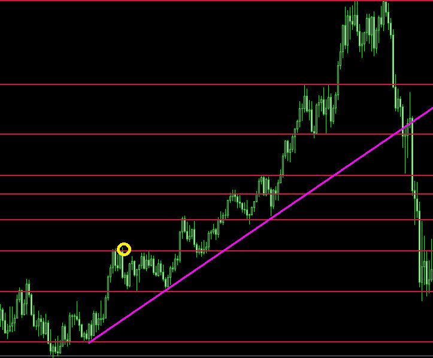
その当たるポイントが想像よりも、もっと上かもっと下かもわかりません
でも大体の当たる時間はわかるのです
その間は相場に張り付く必要もありません
好きな事をしていればいいのです
相場の見すぎはよくありません
実際、エントリーをしていたら無駄な取引をしかねないのです
結果、あなたの大事な資産が増えるかも知れませんが、このライン付近でないと逆行した時に深い損切となります
逆にライン付近だと逆行しても損切が浅くて済みますし、利益も大きく取れます
相場で勝つには「損少利大」の考えを持たないといけないのです
ライン付近でのエントリーはわかりました
それではもっと具体的に利益の最大化について考えてみましょう
まず、トレンドの定義ですが、これについては言うまでもないですが一応説明させていただきます
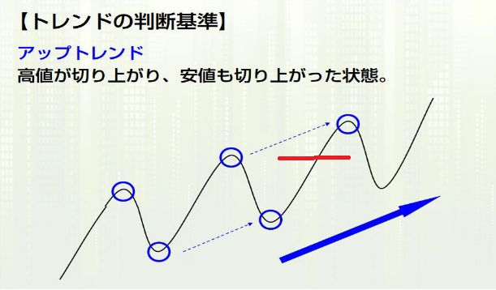
この場合、上記の赤いラインを抜けたときに上昇トレンドが確定します
下落の場合は逆になりますが理論は同じです
ではトレンドが確定したからすぐエントリーなのか？
答えはNOです。先ほどもお伝えしましたが「エントリーの基本はライン付近」抜けたからといって、エントリーしてたら逆行したときに損益を含んでしまいます
大きく伸びたので、その方向に飛び乗りエントリーした瞬間大きく反転して相場にボコボコにされた経験ないですか？
それはプロトレーダーは絶対にやらない事です
飛び乗りには、かなりのリスクを伴いますが成功報酬もでかいです
まさに「ハイリスクハイリターン」です
もちろん安全に乗れる飛び乗りもあります
飛び乗りエントリーのリスクについてもお話します
この相場はレンジブレイクをして一気に上昇しています
そこで飛び乗りしたとしましょう
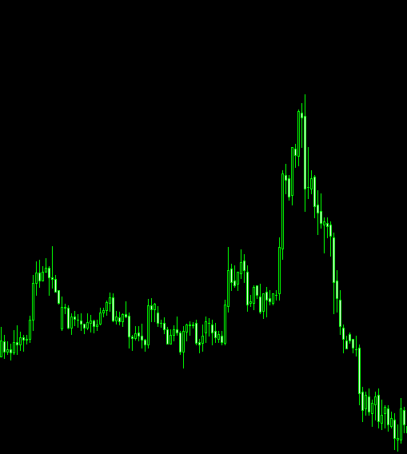
すると、次の足から大きく下りました
どうしようか迷っているうちに更に元のレンジ帯よりも、どんどん下落していきました
このパターンで負ける人は多いですが、それよりも、もっと多くの人が飛び乗りで負けているパターンがあります
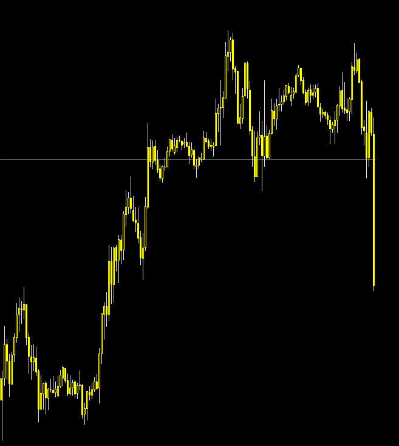
こちらがもう一つのケース
指標などで大きく下落している最中、どんどん下落しています
この時にも人間の心理として飛び乗りたくなるものです
「この波に乗って大きく利益を取りたい」
そして、まだいけると思い飛び乗りました
でも...その瞬間...
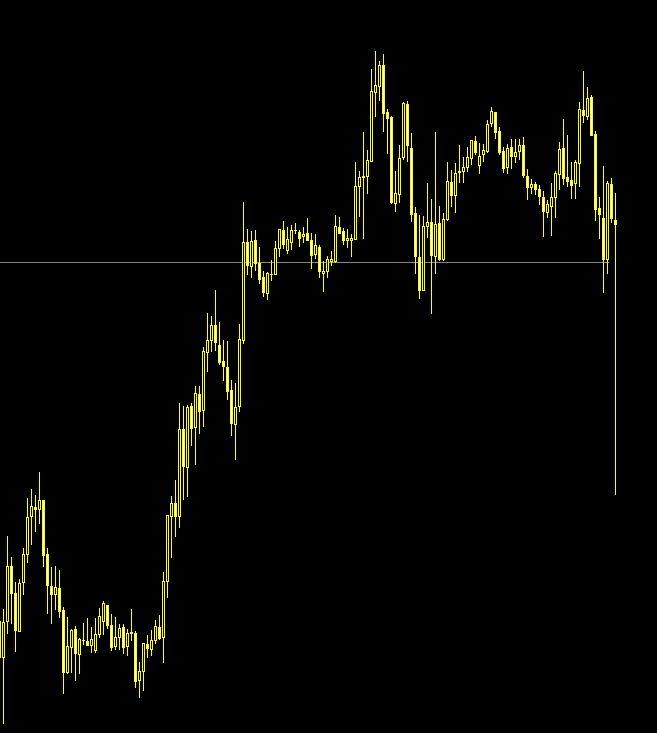
このような大きすぎる戻りに遭い、大きくマイナスになりました
どちらかというと後者の方がキツいです
エントリーした瞬間に、ありえないくらいのマイナスになってるのですから
そこでボタンを押した事を後悔しても遅いのです
ではライン付近のエントリーでどのような形がベストのエントリーなのか？
もっと具体的にやっていきましょう！
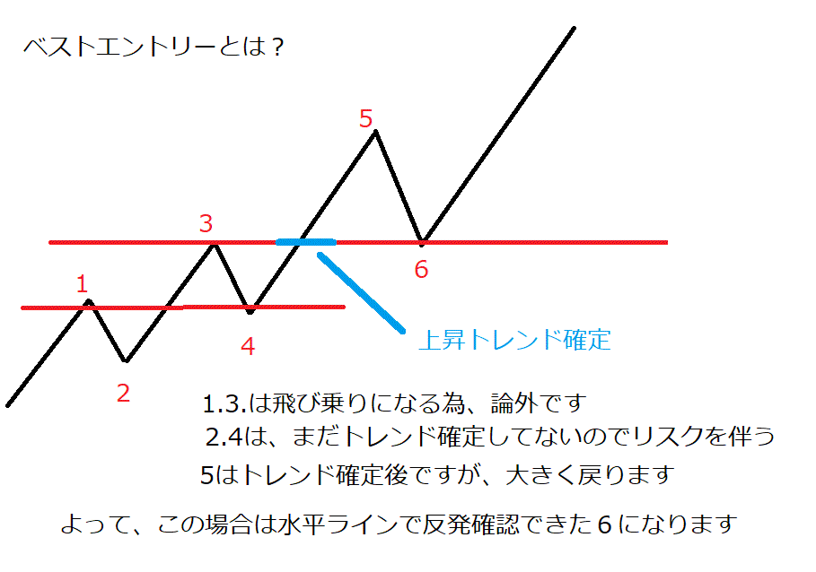
このような場所で入る事を頭に入れれば、逆行してもすぐに損切できますし勝率も高いです。
この事を頭に入れ、実際のチャートを見ていきましょう
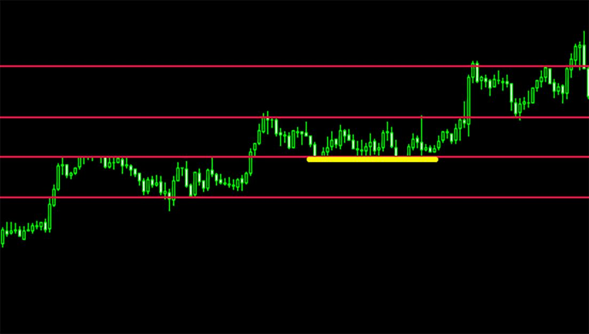
先ほどの画像と同じ形のところです
レンジ帯にも入っていますが、トレンド確定後なので、この黄色い場所付近ならどこでも大丈夫です
つまりこれが15分足なら約8時間もの間、どこのライン付近でもベストエントリーのポイントになります
簡単にどこでもいい、といいましたがつまり、こういうポイントさえあれば「どこでもいい」ということです
チャートの形についてよくMの形とかWとか聞いた事があるかもしれません
しかし、チャートの形は非常に重要になってきます
では形はどのくらいあるのか？
一言でいうと、かなり多いです
ですが、その中でも主要な形があります
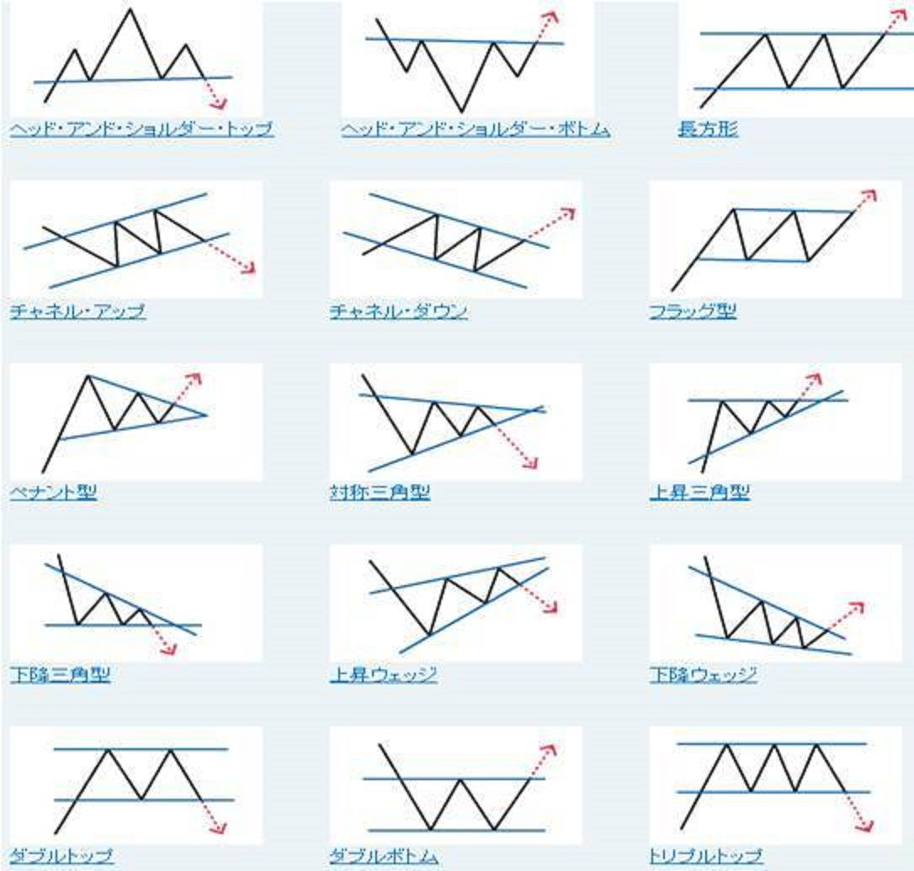
まずこの15種類の形を覚える事です
これらは非常に頻繁に発生しています
ただし、初心者の方は無理やりその形にしてしまったり、都合よく見てしまったりします
赤い矢印の方向に進む確率が高いですが100％ ではないです
しかし、この形を知っているのと知らないのでは、大きな差ができます
先ほどのエントリーポイントのところでも述べましたが、例えばペナント型の形になってきたらローソクの値幅がかなり狭くなってきます
今の時間足であと何分後にブレイクするのか？の予測を立てられます
ブレイクとは拮抗している買いと売りが一旦決着がつくようなイメージで、どちらかの方向に大きく走り出す事を言います
そうする事でチャートから大きな利益を得る事ができるチャンスを逃さないように準備できます
逆のポジションを持っている場合だと、撤退するポイントの目安となったりもします
インジケータを使わない私にとっては、これも重要な判断材料の一つとなり、為替をやっていく上でかなり先の展開が見やすくなります
たった15種類を覚えるだけです
全然難しい事なんてありません
大きい足でその形になってきたら、その日一日はどのように動くのか？
そのあと、小さい足を見てブレイクポイントやエントリーポイントを絞るのです
最初は難しいかもしれません
それも最初にお伝えしたラインを引く作業と同じく、何千、何万と見ていくうちに手に取るようにわかるようになります
FXは積み重ねなのです。
武器を一つ一つ増やしていくものです
その反復は時代が変わっても無駄にはなりません
スポーツに例えるなら延々と基礎ばかりやっている状態です
しかし基礎はとてもとても大切なもの
いつしか、体に染みついてきます
その経験は確実な力となり、あなたを大きくレベルUPさせてくれると思います
ラインも引けてベストエントリーポイントも分かりチャートの形も見えるようになってきました
さてあなたは次にする事があります
なんだかわかりますか？
え？入金して実践ですか？
いいえ違います
「出口戦略」という武器を手に入れていませんよ？
簡単に言うと決済ポイントです
これは非常に大事な部分ですので、しっかりと理解する必要があります
FXで負けない方法はあります
それはマイナス決済しない事です
といっても、いつか戻るだろうといって、いつまでも「赤字のポジションを持ってろ」と言ってるわけではありません
それは塩漬けと言って、決済できない病気の一つです
この話はまた後程お伝えいたしますが、とにかくマイナスは小さく利益は大きくを目指している訳ですから、しっかりとしたルールを作る必要があります
しかし、出口戦略に関しては上級者でさえも迷うポイントであり利確が早ければ、利益にはなるがさらにそこから大きくブレイクした時の悔しさったらありません（笑）
逆もあります。大きくブレイクするだろうと、そのままにしていたら、いつの間にか逆行して結局マイナス決済になってしまったとか...
これもあるモノを使えば視覚化できます
ここまで読んでいただいてる皆様の中には気づいている方もいらっしゃると思いますが
そうです！
「トレンドライン」を使って決済のポイントを図ります
トレンドラインの使い方に関しては前回述べましたが、おさらいの意味でもう一度詳しくお伝えします
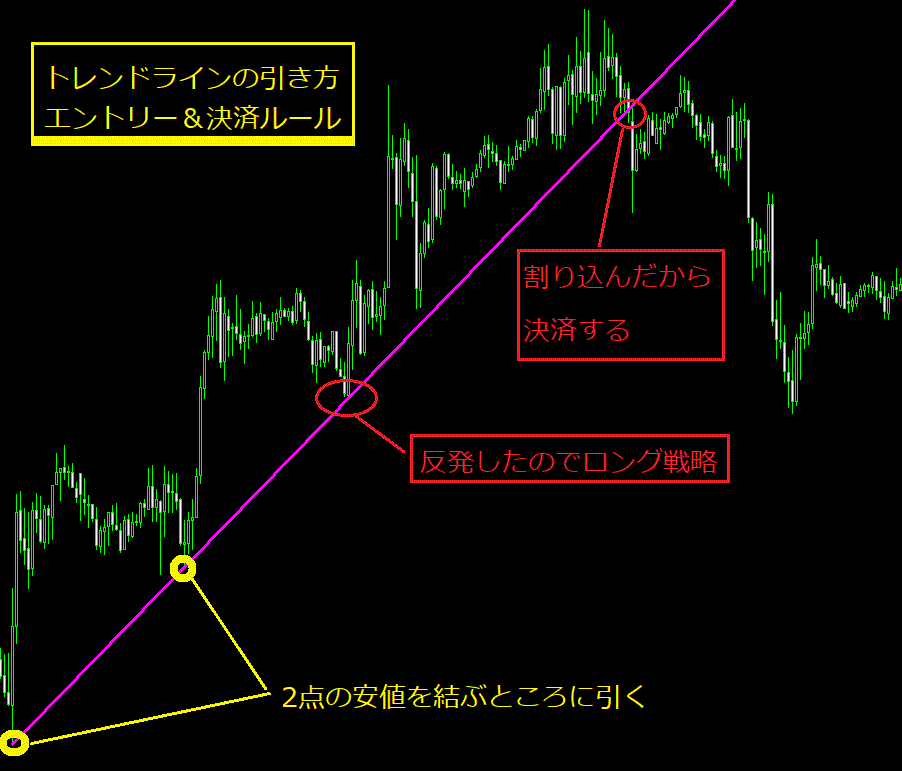
トレンドラインとは、そのトレンドに対しての根拠のラインとなります
その1本のトレンドだけを取るイメージでその、ラインを割り込んだら決済と私はルールを決めています
その判断はダマシ等もあり、難しいポイントとなりますが
きれいにラインが効いている場合は綺麗に反発していきます
反発を確認できれば、上昇中であればロングのエントリー
そのまま突き抜ければ反発確認後にショート戦略が出来ます
そしてもちろん決済ポイントの目安ともなります
そのあと、下方向にも高値と高値を結びラインを引いていきます
もちろんラインに関しては相場に対して引き直したりして追いかける必要があります
このルールを採用すれば、かなり根っこから取れますし
反転した時にも迷うことなく決済できるルールになります
決済に関しての私のルールです
人によっては、どれだけ戻れば決済とかこのポイントに到達したら決済とか色々とありますが、どれが正解とかではなく、利益で決済出来れば、例え10円でも勝ちです
「欲張らずに自分が納得して決済ボタンを押せれば正解」です
例えそこからかなり伸びたとしてもいいのです
逆にまだ伸びるんだと安易に飛び乗る方が危ないです
これがトレンドラインを使った決済方法です
そしてもう一つあります。
水平線を使ったレンジ帯での決済もお伝えしておきます
そもそもレンジとは何か？
売りと買いが拮抗している場所です
トレンドとトレンドの途中で出ますが相場自体がほぼレンジ相場です
トレンドの途中のレンジは「休んでいるだけ」のイメージです
結局またトレンド方向に向かって進んでいくことが多いです
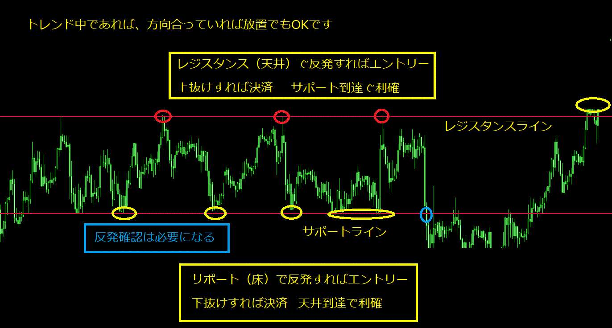
こういう状態をボックス相場といいます
教科書のような横ラインがきれいに意識されています
トレンド中であれば、このレンジを取る為の「順張り中の逆張り」の発想も有効です
これが私の出口戦略、つまり決済ポイントです
これは私の中のルールですが皆さんも絶対的にブレない自分のルールを色々と作っていかなくてはなりません
しかし、エントリーをしていて+100pips獲得していたのに数時間後に見たらポジションが損切決済されていた...なんてのはよく聞きます
それってすごく悔しいんですよね
そこでそういう場合は決済注文で利益確定ラインを納得する場所までずらすのも有効です
最悪は利益ゼロ決済でもいいじゃないですか
負けてないんですから
そうすることで勝率も利益率も上がります
とにかく赤字決済しなければ勝ちなのです
お金を減らさなければ例え+10円でも勝ちですから
その決済の考え方を頭に入れておけば、決済でいくら逆行して利益が少なくなっても「納得のプラス決済」と自分に言い聞かせて次の取引に取り組む事が出来ます
これでまた「決済ポイント」という武器を手に入れました
それではいよいよ実践...ではありません！
まだです！まだ戦いに出ては駄目です！
先ほどもお伝えしましたが、勝つ為にはもっともっと色んな自分のルールを作らないといけません
その為には自分を知る必要があります
あなたは数々の武器を手に入れましたが、まだはっきりとしたルールを決めていません
これから色んな試練があると思いますが大丈夫です
失敗しない為に、失敗をしてる人を見て自分に当てはめるのです
失敗している人の7つの特徴（病気）
・ポジポジ病
むやみやたらとポジションを持ちたがる
エントリーしていないと気が済まない
ポジしてないと損してる気がする
・損切り出来ない病
思惑と逆に相場が動いても損切りしない
それが大きな含み損になっても切れない
持ち続けて不安な日々を過ごす
・コツコツドカン病
とにかく少しでも利益が乗ったらすぐ決済
実は大きく取れたのに数pipsの利益で決済する
そしてまた入り直して小さく取る
そして最後は逆行して大きなマイナス決済
・気になる病
ポジションを持っていると心配で夜も眠れない
夜中に飛び起きて相場チェックする
仕事中もポジが気になって仕方が無い
・全力ハイレバ病
ありったけの資金を投入しないと気が済まない
取引与力を全て注いで大きなリターンを狙う
一回の負けで今までの勝ちを帳消しにしてしまう
・低レバ病
負けが続いて負ける癖がついてしまい
資金が減る恐怖から、レバを掛けれなくなり
トレンドを掴んでもロットが低すぎて利益にならない
・ポジ出来ない病
負けが続いてチャンスが来ても入れなくなる
そして後から相場を見て後悔する
さらに落ち込んで出来なくなる
これらは全てリスク管理と資金管理の問題なのです
最後のは末期症状です（笑）
デモで、この病気になっているようでは実践なんてとんでもない話です
まず「資金コントロールによってリスクを限定させる事」
失敗している人と同じ事をやらなければ負けないのです
「リスクを知り、資金管理を徹底する」
極論を言えば、これだけで負けなくなるのです
エントリーはどこだとか、決済はどこだとかは、どうでもいい訳はありませんが最重視するのはこのポイントなのです
適正なポジションサイジングとそのエントリーに対しての損切になった場合の損益はいくらか？
この部分さえしっかりとできれば、負けても全く次のチャンスまで待てばいいのです。
エントリーポイントについてはライン付近でエントリーと、飛び乗り禁止のルールがあるので、それに沿ったリスクコントロールをすれば例え飛び乗りになったとしても、資金管理でカバーできてしまうのです
FXは、確率の高い方向に資金を置くだけです
確率といっても50％
ならただのギャンブルになってしまいます
過去の傾向などから算出されている80％ レベルでの高い確率って意味です
その80％ の勝率で10連敗する方が難しいと思います
リスクさえ限定させてしまえば、FXは決して難しいビジネスではありません
もちろん「FXは簡単だ」とも思ったこともありません
やはり投資なので難しいです。
実際のお金を使ってやっているので、デモとは世界がガラリと変わります
デモにメンタルの部分が大きくのしかかってきます
だからこそ、自分を知り、リスクを知る必要があります
ボタン1つで一瞬で溶ける事もあります
ボタン1つで一瞬で莫大な利益になる事もあります
でもしっかりとしたルールを守って、自分を知れば、色々な状況にも対処できるのです。
前項で基礎の反復と言いましたが、まさにそれです
そうやって絶対的な部分にしていかなければならないのです
それにはやはり「絶対的な相場に対する経験値」が必要なのです
3日目の人、30日目の人、3年の人
どう考えても引き出しの多さは3年目の人には勝てないのです
この差をどうすれば埋めれるのか？
それは相場と向き合う時間を増やすしかありません
でも焦らなくてもいいのです
どれだけ時間がかかっても、ゴールすればいいだけ
経験値は無くなりません、
しかし相場から少しの期間離れるとやはり相場勘が鈍るのは事実です
しかし、やっぱりやってきた事に対する相場経験値は無くならないのです
そうやって一歩づつですが、確実に階段を上っていく事がゴールへの近道になります。
決して2段飛ばしではいけません
徹底した資金管理も、そこに行くまでの必須項目の一つです
なので、しっかりとした資金管理を勉強していきましょう
本来なら最初にお話しする事なのですが、デモトレード前提でやっていますのでこのタイミングで、資金管理についてお話します
資金管理は、FXをやっていく上で、常に行動を共にするパートナーのようなもの
どんな時も一緒です。
だからこそ、付き合い方を間違えると一瞬でとんでもないことになってしまいます
もしあなたが「10万円」からFXを始めたとしましょう
レバレッジについてはご存知だと思いますが計算しやすいように、例えばドル円が100円として10万円の円をドルに両替した
この場合、10万円が1000ドルに変わります
これが1000通貨、レバレッジは1倍です
10000通貨（0.1ロット）ならレバレッジは10倍
100000通貨（1ロット）ならレバレッジは100倍
もし海外証券会社で最大レバレッジ888のところでやるとすれば888倍で888000通貨（8.88ロット）になります
ではフルレバでエントリーした場合、1pipsでなんと8880円なのです
-5pipsで資金10万円がどうなるのか？
-44400円となりますが、FXにはスプレッドといったもの（証券会社手数料）が存在します
（海外口座はスプレッドが広めに設定されています）
その分も引かれた状態でのエントリーとなります
分かりやすくスプレッド込みで1pips＝1万円と考えればいきなり資金が半分になります
FXは追証通知というものがあり、さらにマージンコールというものがあります
これは証拠金維持率（残りの有効証拠金）が50％ を下回ると追証通知が発生します
追証とは簡単に言うと、もうあなたの資金状況は危ないですよ？
このポジションを維持したければ、追加資金を投入してください
そんなニュアンスです
更にそこから-3pipsとなった場合-80000円となり証拠金維持率が20％ になってしまいます
この時点でロスカット（強制決済）されてしまいます
そうなると自分の意志が関係なく決済されてしまいます
いきなりの取引で資金が一瞬で2万円に...
この場合は損失80％ となりますが、一度の取引でこんなに資金を失うともうやり直すには追加資金の投入しかありませんし、これではギャンブルと同じなのです
資金管理のルールは自分で決めないといけないですがまず、損切となったときの負け額を計算することです
損切ラインから現在の相場を見て、どのくらいの幅があるのか？を計算しなくてはなりません
最大ドローダウン（負け額）を何％
に設定するのか？が重要です。
私の場合は３％
～５％
で設定しています
相場状況によって変えていますが、皆さんは固定で考えた方がよいと思います
例えば損切を５％ と設定し、損切ラインまで10pipsあるとしましょう
その場合は、最大負け額が5000円ですから適正ロットは0.5ロットになります
この損切ラインが20pipsだった場合適正ロットを半分にすれば良いのです
この場合の適正ロットは0.25ロットです
どうしても0.5ロットエントリーしたい場合は損切ラインが10pipsになるところまで待てばよいです
エントリータイミングをライン際まで引き付けるとは、そういう意味なのです
とにかくあなたの資金は誰も守ってくれません。
あなたしか居ないのです
だからこそ、大きな足でトレンド方向を見て短い足でトレンドフォローする
そうする事によってリスクは限定され、利益の方も最大化を狙えます
ドローダウンが５％ なら20連敗してようやく資金が無くなります
勝率80％ のところだけをエントリーして20回連続で負けるのはとてもあり得ないのです
もしそれが現実に起こったなら逆にそれは天文学的な確率か、あなたが何か違う事をしているからなのです
だから普通にやっていれば負ける事はあってもなくなる事はあり得ない
資金増加率の方が高いはずです
この部分は常について回るものです。
資金管理とはそういうものです
リスク管理も資金管理も手に入れたあなたは、ついに実践の門を叩ける資格ができました
しかしこのまま実践の行っても良いのでしょうか？
答えは「どちらでもいい」です
資金管理とリスク管理さえ手に入れる事が出来ればもう実践導入しても構いませんし、実際の資金を使う事でしか分からない事もあると思います
ただし安易にトレンドだ！と判断することはしてはいけないです
先ほども触れましたが、短い足でのレンジ帯の時に初心者の方がよくやる事なのですが、これはトレンド発生だ！と判断できるポイントがあるかも知れません
先ほどのチャートですが、この黄色いラインの間をよく見てください
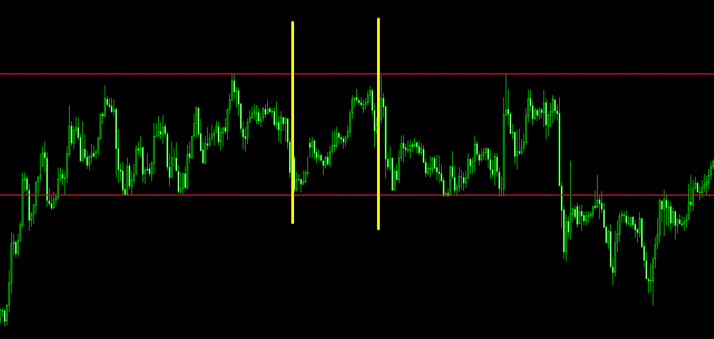
この部分だけ見れば、高値も安値も切りあがってサポートレジスタンスも綺麗に出ています
こんなケースは非常に多いのですが、ここがトレンドの始まりではないのです
何故ならこれは5分足ですし長い足で見てもレンジ途中だからです
リスク限定していればいいのですが、これだと単純な判断ミスである為ロット数によっては損切になり得る場所です
こういうレンジ帯では私もあまりやらないですが初心者の方は
ついついポジションを持ちたがる傾向にあります
何故なら大きな勘違いをしているからです
チャンスが来た！よしエントリー！！
負けたか...次ここだ！！エントリー！
この考え方は違うのです
FXは資金を増やす事が目的ですが、追加で捕捉するならば「資金を守りながら増やす」の意味合いです
「エントリーしなければお金が増えない」ではなく「エントリーしなければお金が減らない」なのです
ここまで読んでくださったあなたは、その事が分かっているはずです
それが分かれば、もう実践しながら学ぶ事ができるレベルになっています
実践を始めたあなたは、今までの武器を駆使してなんとか戦えてるかも知れませんし、戦えてないかもしれません
簡単な相場の日もあれば、難しい強敵の多い相場の日もあると思います
それら全てに立ち向かっていては行けません
こういう言葉があります
「休むも相場」
つまり、難しい日は資金が減る率が高いから今日は様子見に徹する
チャートを確認して、簡単な日だけやればいいや
そんな考えに行きついたなら大正解です！
難しい相場はどんな時かというと
ボラが大きなレンジ相場
（上下の幅が広すぎて損切ラインをすぐ引っかけられる）
トレンドの転換期
（トレンド方向の目線は急には変えられないものです）
トレンド中の大きな反発戻り
（トレンド転換か？と迷ってしまう）
こういう時は初心者の方は、なるべく様子見に徹していた方が資金は減らないです
逆に簡単な相場は
トレンド継続中の一色相場
（買い一色、売り一色どこまもその方向に行く）
サポートレジスタンスがきれいな相場
（エントリータイミングを計りやすい）
トレンド中のレンジ帯
（その方向に行く確率が高い為、狙いやすい）
減らなければ休んでいいのです。
無理に強敵と戦う必要なんてありません
そもそもあなたは強敵と戦うのが目的ではありません
「相場から利益を取る」だと思います
ゲームじゃありません、リアルなのです
まずあなたが何の為にやっているのか？
FXで利益を取れれば、この先どうなっていくのか？
自分がこういう風になりたいからとか月間いくら欲しいとか お金が欲しいからFXをやるんだ！って一番最初にそう思ったはずです
これが叶えたいからFXをやるんだって感じでFXに入ったと思います
誰もFXやりたいからFXを始めた人なんていないと思います
初めっからFXに興味があってやっている人は凄く少ないと思います
お金が欲しかったから、お金を稼ぐ手段として、その夢を叶える為にFXをやっているんですよね？
簡単に言うと、FXで得た利益が発生すればあなたの夢が叶う訳なんですよね？
あなたの掲げた目標に向かって走れる訳ですよね？
それが物だったり、人によっては会社を起業するための資金にしたり人によっては海外で自由な生活をしたいとか色んな考え方がありますが、そのFXで稼いだお金があれば、自分が叶えたかった夢を叶える事が出来るからじゃないですか？
強敵と戦う為にやっている訳ではないですし、そんなリスクは排除するべきです
それはあなたにとって最短への道ではないのです
私も方向性のはっきりしない相場の時はすぐにPCを閉じます
そして
今日は休み！って叫びます（笑）
それでいいのですよ
そのはっきりとした目標設定ができていれば1日休む事なんてどうってことないです
その事を完全に分かった時、あなたの勝率も利益率も爆発的に上がります
そうです！最初から私が焦ることはありませんと何度も何度も言ってきている意味が分かったかと思います
あなたは最短で行けるのです！
遠回りする必要なんて無いのですから
それを把握したあなたは、気付けばプロトレーダーになっています
実は...私も利益を取れるまで3年かかっています（笑）
最初500万の資金でロクに勉強もしないで為替の世界に参入しました
結果はあっという間に資金が10万円になってしまいました
悔しいというレベルじゃなく次やったら勝てる！
ここだ！あっ！逆だ！みたいな感じでもうパニック状態でした
何故勝ったのか、なぜ負けたのか？
それすらも原因が分からなかったです
私は最初は勉強せずにスキャルピングをやりましたが結果は目も当てられない状態...そんな感じでした
そして10万円の資金を入れたまま、それからはひたすら勉強しました
デモを1年やりました。
絶対に倍返ししないと気が済まなかったからです
だって悔しいじゃないですか？
そのリベンジしてやろうという想いだけでひたすら勉強しました。
手法も日足や4時間足のスイングから本格的に学びました。
元々、スイングトレーダーだったのです
だからあの80円時代から100円到達までのアベノミクスによる急激な円安が追い風となり、当時のサラリーマンの年収を一日で稼いでしまったのです
夜、仕事から帰ってきたら年収分増えてた！って感じでした
その時に脱サラを決意し本格的にプロとして歩み始めました
現在は１時間足をメインのデイトレーダーとしてやっています
サラリーマンをしながらでも勉強はできます
だって一生食うのに困らないスキルですよ？
そりゃ寝る時間を削ってでもやりましたよ
でもそれはあなただから出来たのでは？
そう思いますか？
私にはもちろんセンスなんてありません
みなさんセンスなんて無くていいかと思います
私にあるのは諦めない気持ちと相場経験値です
それだけで十分に対応できるようになるのです
今ある武器を磨いていくだけで凄く強く洗練された武器に変化します
3か月や半年で諦める方がすごく多いですが、本当にもったいないです
チャートの過去検証もすごく地味な作業です
でもその先にあるFXの成功を見てたらよし！頑張ろう！そう思いながら取り組めるはずです
私はそうでした
だから皆様も決して諦めてはいけません
続けていれば、歩き続けていれば必ず山の頂に立つ事ができます
だから諦めないでください！
一緒に相場の世界から利益を取って豊かな人生を送りましょう！
最後までご購読ありがとうございました
金井琢磨